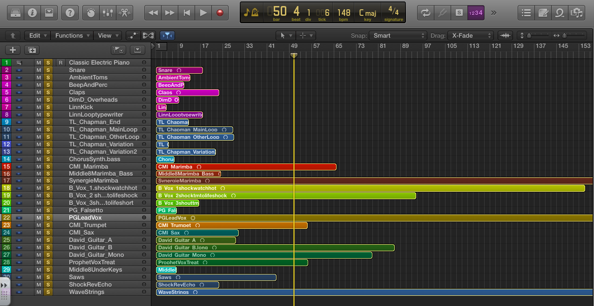

Hello,
Anyone interested in forming a group for Logic Pro X users?
51 readable posts · 1 personal posts omitted · Started 2014-05-15
Hello,
Anyone interested in forming a group for Logic Pro X users?
Hi
I`m currently using logic9 but plan to upgrade to X when our album project is finished. I´d like to participate in any discussion about X.
Cheers
Guido
Hey Lisa,
Yes, I'd be interested! Image omitted from this public edition
Sure. Sounds like a great idea!
TOTALLY! I'd love to engage that DAW I always work with and am trying to learn better!
I have over 6 years of working experience with Logic. Used to teach it in High Schools in California. Also had workshops in Warsaw (Academy of Sound Engineering).
[external link withheld] [link withheld]
Perhaps I should be spearheading this somewhere else, but what about LIVE users?
Sounds like a good idea, just upgraded to Logic X. It keeps crashing, freezes and all my Waves Plug ins are messed up.
yes please! Logic pro X is great.
Definitely upgrade Logic X is pretty cool
Here are some links to frequency charts...
[external link withheld] [link withheld]
[external link withheld] [link withheld]
Do they look o.k.?
Count me in, longtime Logic user. First time visitor. Hello Scot!
I'd like to participate, although I'm still using 9.
I'm a long time DAW user having bought my first Participant 001 in the early '90s.. a Digidesign (now Avid) Session 8 using Pro Tools LE. This was back when a 1GB SCSI hard drive cost about $1000!
Yes they look okay [participant mention] [link withheld]. I've seen other frequency charts with similar instrument ranges.
Have to skip ahead a bit...
Step 1 - Organization - Shock the Monkey - Remix

Hey everyone, this group will surely be super beneficial to myself as well, have been a Logic user for the past few years, but it's always handy learning new tips/shortcuts to speed things up and get better results!
I'll be using Logic ProX, too - still a novice, but hoping to use this course to boost my Logic skills as well.
I'm current on Logic 9 but may upgrade soon, if all goes well. Been tinkering with Logic on and off for years and it's about time I learned to use it properly.
Hi there. Just introducing myself and wishing to join this group. I use Garageband and am trying to get my head around Logic Pro 9.1.8. Finding it overwhelming!
Nice to meet you all.
Participant 618 Image omitted from this public edition
I just got it, and plan to grow on it. I used to use Pro Tolls, but with my Macbook Pro, I am more mobile with Logic Pro X. I have to learn it all, but this is my go to platform nor, so I would love to get down with this group and build on it.
I really like the stems and individual tracks provided for "Shock the Monkey." Fun stuff! I didn't know the stems and individual tracks have been available for some time [link withheld].
I've since listened to some really cool remixes of the tune by other folks: dance/techo, reggae style, etc.. but my favorite (so far) is a reharmonization of the melody using just a piano by Christof Unterberger.
Really brilliant in my opinion.
Peter Gabriel has said the song is a love song about jealousy. This version, to me anyway, changes the meaning to being a song about being vulnerable and pleading for protection and solace.
Maybe I'm way off-base, but that's how I hear it. What do you guys think?
Embedded media omitted from this public edition
Hi,
Very interested. I'm using Logic 9 and MainStage2.
Studio recordings: [external link withheld] [link withheld]
Thanks for the info on the stems. Exciting stuff. And yes that piano remix is stunning.
This is beautiful. I have always loved the original, though I have disliked most of the remixes I have heard through the years. This one, however, is enchanting. It really changes the entire dynamic of the song completely. Almost ethereal. I love this.
Thanks for sharing this. It's refreshing and haunting.
Currently still using Logic 9, yet to upgrade to X. Looking forward to learn more about it from y'all!
Interested! I've tinkered around with Logic Express 7, so that's what I'll be using, but need to learn how to really use it
Hello Lisa, can you tell me where we can find the audio files for the remix?
Thanks,
Rene
Hello Jean, I recently upgraded from 8 to X and it was a bit of a headache. Lot's of crashing and issues with the plug ins from Waves. I hope it wont happen to you or other but in case it does, you are not alone Image omitted from this public edition
Click on Community - Artist Content - Peter Gabriel Shock the Monkey
After Videos Click on Shock the Monkey Remix Pack
Click on Get the Stems
I Agree to all terms Start the download
Hi guys. In the spirit of sharing and learning, I put together a video showing audio ducking using compressors.
Ducking is reducing the volume of one or more audio tracks based on the volume of another. One example would be to reduce the volume of a music track in a commercial while a voice-over is being spoken, then allowing the music to increase after the voice-over completes.
This is also useful in audio mixing. For example, having the bass guitar's volume lowered or ducked whenever the bass drum plays. This can be done manually using the bass guitar's fader or drawing volume reduction automation, however, this may not be practical because it might require lots of volume automation throughout a song depending on how many times the bass drum plays.
One solution would be to use a compressor on the bass guitar track sidechained to the bass drum track. The idea is that the bass guitar audio will be attenuated whenever the bass drum plays. The bass drum controls the compressor on the bass guitar track through the sidechain.
Here's the video I made using both a bass synth and synth pad with compressors sidechained to the bass drum track. Bass synth compressor is on the left and synth pad compressor is on the right. Listen especially to the synth pad. Every time the bass drum plays, the synth pad volume is immediately reduced, then the compressor releases and volume increases until the bass drum plays again and the process repeats.
This is a pretty aggressive use of sidechained compressors sometimes used in dance/techno type music for a "pumping" effect, but it can be used more subtly and in different ways on other types of music.
Embedded media omitted from this public edition
I'm by no means an expert on this, so if anyone has a question or wants to add to all this, please do!
Thank you very much Image omitted from this public edition
Rene
Hello,
Feel free to share your listening space, frequency listening response and response to the first live interview. I haven't had a chance to see it yet but am planning to spend some time this weekend. Looking forward to hearing from everyone! I'll check out the ducking video too!
Hello Participant 264, Neat. IIUC, you have inserted compressors into the bass track and the synth pad track and the side chain is routed into"Input 1". So, the kick drum has been routed to "Audio 1" ?
(The bass line sounds very much like that of "Billy Jean").
Thanks for sharing.
Eb
Yes ebsynth, that's right. Both compressors are sidechained to the bass drum on the Audio 1 track.
Post #37 is omitted from the public reading edition to protect personal information.
Ducking audio with compression seems like an important step in mixing. I understand what you mean but I'm not sure how to do it. Would you be able to video the steps you took to create this?
Thanks!
Count me in, sounds like a good idea. I've recently switched from Cubase to Logic Pro X.
I found this video of someone doing a step by step demo using Logic X.
Embedded media omitted from this public edition
Hello, please count me in as well, a new user of Logic Pro X. Discovered the software in general and I found that the libraries are so great!
Assignment #1 Perceived Space Graph.
This is Suzanne Vega's Tom's Diner. I hear this on my commute to work and find it catchy. After listening more closely, I think it's cool to hear a person's thought at a given moment in time through song.
Embedded media omitted from this public edition
Perceived Space Graph
Cool to see folks still taking the time to participate and share.
Nice analysis and presentation of the Suzanne Vega song Participant 009.
Hi, count me in also. I just recently started using Logic Pro X and I love it.
Well done. The "synth" is probably an upright piano and the "strings" sound like a synth pad from a Prophet VS.
Participant 448
Hi, Like to join here too. Got Logic X installed for two months now, but not really started using it. PWYM is supposed to be changing that:-) Participant 711
After listening to some of the other projects, I'm reconsidering the placement of my bass line? more forward, closer to the vocals? Any thoughts?
I thought you did a good analysis of the Suzanne Vega tune!
I'm hearing both the bass and drums (or sampled drums or percussion) as a "block" together. Neither one more dominate than the other; just providing the rhythmic "backbone" to the song to help propel it.
I can imagine the tune with just Suzanne playing acoustic guitar and singing.. I think an acoustic guitar version of the song with her singing and playing would stand on its own and the meaning of the song would be the same as the album version.. to my ears anyway.
As a side note.. it's interesting to me.. this #PWYM course is talking about two-dimensional mixing (left-right.. front-back).
I hear it as 3D.. width (left and right stereo), depth (forward and back using relative volume and reverb, etc.).. and height (lower frequencies on the bottom, higher on top).
Sorry to hijack [participant mention] [link withheld].. just wanted to (hopefully) add to this course and spark some conversation.
O.k. I'll leave the Suzanne Vega. 3D - Interesting idea - How could we graph in 3D? Someone else mentioned the idea of volume as well and how that plays into our perception.
Getting a head start on the remix project. Putting together the structure...
Embedded media omitted from this public edition
I would love to join. I've been using Logic 9 for nearly 4 years now, and have used it both to develop some completed works, plus have ported some of my other songs to it that were were originally developed using Cakewalk SONAR. I know I will upgrade to 10 at some point--I haven't yet because I tend not to ride the bleeding edge when it comes to software.
I imagine trying to graph three-dimensions on a two-dimensional graph space would be difficult; crowded and cluttered visually.
.. About the use of volume to place instruments/vocals, etc. forward or back in a mix.. There was a Play With Your Music video interview with Alex Chase where Alex touches on the idea of using volume on individual tracks to make them be perceived as "close" (forward) or "far away" (back).
I read a cool book by Participant 599 Zappa where he talked about the sound of modern recordings as an illusion.
Think about it.. we can now manipulate sounds any way we want and make really vibrant and creative recordings with modern methods. We've become used to hearing the "illusion."
Years ago, mics were put up, performers performed, and that was that..
But later, we could put performers in an artificial space that didn't exist and enhance the sound.. Remember the famous slap-back echo Elvis Presley recordings had using a tape recorder?
Embedded media omitted from this public edition
Anyway, I didn't want to get into the history of recording music. I just wanted to point out how we've become accustomed to hearing the manipulation of recorded sounds and the "illusions" of audio recordings.